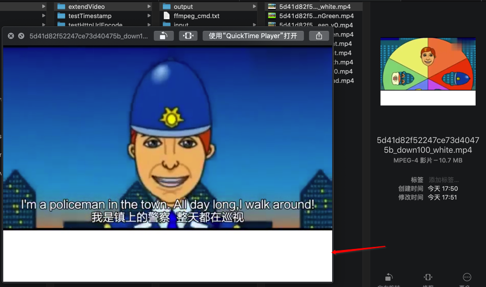
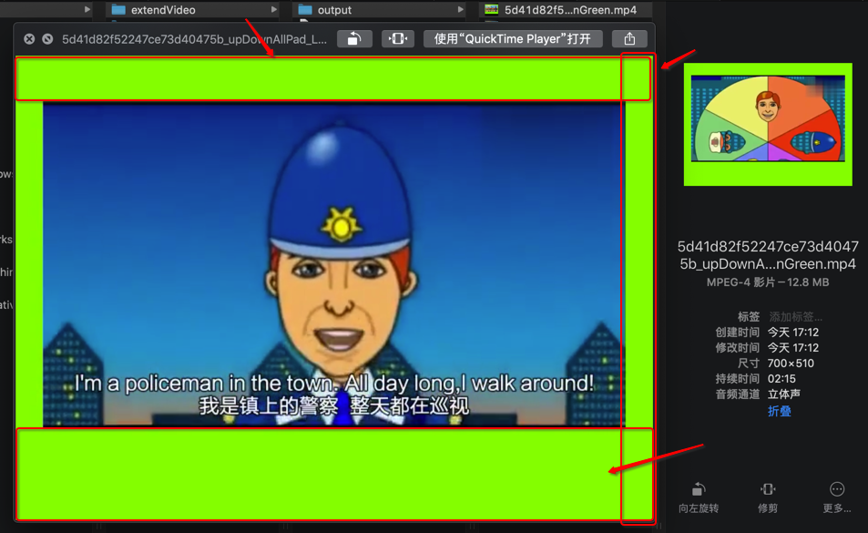

尺寸调整
缩放视频尺寸
ffmpeg -i big.mov -vf scale=360:-1 small.mov
- 注意
scale值必须是偶数，这里的-1表示保持长宽比，根据宽度值自适应高度- 如果要求压缩出来的视频尺寸长宽都保持为偶数，可以使用
-2
extend扩大视频高度（和宽度）
- 注意：此处改变视频宽高，是
调整=extend=enlarge=扩大或缩小，不是等比例缩放=resize
思路：用ffmpeg的pad参数去指定要扩大的宽度和高度
参数详解：
pad=padding：增加视频区域，即宽度和（或）高度width和height：（增加了padding后的）输出的视频的宽度和高度- 值的方式
- 固定的数值
- 表达式
- 可以借用内置支持的常量或变量
- 比如
- 输入的原始视频的
- 宽度：
in_w=iw - 高度：
in_h=ih
- 宽度：
- 输出的padding后的视频的
- 宽度：
out_w=ow - 高度：
out_h=oh
- 宽度：
- 输入的原始视频的
- 比如
- 可以借用内置支持的常量或变量
- 值的方式
- x和y：
- 原始视频，放在输出后的视频的位置
- 默认：
0和0- 特殊
- 如果（
x或y）是负数，则效果是（水平方面或垂直方向）自动居中
- 如果（
- 特殊
用法举例
- 输入：原始视频 480x360
- 输出
希望：宽度不变，高度在下面增加100，背景色是白色
命令：
ffmpeg -i input.mp4 -vf "pad=width=0:height=460:x=0:y=0:color='White" output.mp4
参数说明：
- 高度
- 可以用数值：
460 - 也可以用表达式：
ih+100ffmpeg -i input.mp4 -vf "pad=width=0:height=ih+100:x=0:y=0:color='White" output.mp4
- 可以用数值：
效果：

希望：调整多个属性
希望：
- 高度：上面增加
50，下面增加100- 总增加高度=
50+100=150
- 总增加高度=
- 宽度：左右都增加
30，原视频居中- 总增加宽度=
30*2=60
- 总增加宽度=
- 背景色：
LawnGreen - 透明度：
0.2
命令：
- pad中的值用手动计算出的值：
ffmpeg -i input.mp4 -vf "pad=width=540:height=510:x=30:y=50:color='LawnGreen@0.5" output.mp4 - 或：pad中的值尽量用表达式：
ffmpeg -i input.mp4 -vf "pad=width=iw+60:height=ih+150:x=-1:y=50:color='LawnGreen@0.5" output.mp4
效果：

附录：
前面折腾期间的命令记录，包括出错的命令：
ffmpeg -i input/5d41d82f52247ce73d40475b.mp4 -vf "pad=width=640:height=360:x=0:y=40:color=black" output/5d41d82f52247ce73d40475b_afterPad.mp4
ffmpeg -i input/5d41d82f52247ce73d40475b.mp4 -vf "pad=width=640:height=400:x=0:y=360:color=black" output/5d41d82f52247ce73d40475b_afterPad_191610.mp4
ffmpeg -i input/5d41d82f52247ce73d40475b.mp4 -vf "pad=width=0:height=400:x=0:y=360:color=black" output/5d41d82f52247ce73d40475b_afterPad_autoWidth.mp4
ffmpeg -i input/5d41d82f52247ce73d40475b.mp4 -vf "pad=width=0:height=400:x=0:y=360:color=0x00" output/5d41d82f52247ce73d40475b_afterPad_autoWidth_transparent.mp4
ffmpeg -i input/5d41d82f52247ce73d40475b.mp4 -vf "pad=width=0:height=400:x=0:y=360:color='0x00" output/5d41d82f52247ce73d40475b_afterPad_autoWidth_transparent.mp4
ffmpeg -i input/5d41d82f52247ce73d40475b.mp4 -vf "pad=width=0:height=400:x=0:y=360:color='White@0.0" output/5d41d82f52247ce73d40475b_afterPad_autoWidth_transparent.mp4
ffmpeg -i input/5d41d82f52247ce73d40475b.mp4 -vf "pad=width=0:height=460:x=0:y=360:color='White" output/5d41d82f52247ce73d40475b_afterPad_autoWidth_moreHeight.mp4
ffmpeg -i input/5d41d82f52247ce73d40475b.mp4 -vf "pad=width=iw:height=ih+100:x=0:y=ih:color='SeaGreen@0.2" output/5d41d82f52247ce73d40475b_afterPad_autoWH_SeaGreen.mp4
ffmpeg -i input/5d41d82f52247ce73d40475b.mp4 -vf "pad=width=iw:height=ih+80:x=0:y=0:color='SeaGreen@0.2" output/5d41d82f52247ce73d40475b_afterPad_autoWH_SeaGreen_y0.mp4
ffmpeg -i input/5d41d82f52247ce73d40475b.mp4 -vf "pad=width=iw+60:height=ih+150:x=-1:y=50:color='LawnGreen@0.5" output/5d41d82f52247ce73d40475b_upDownAllPad_LawnGreen.mp4
ffmpeg -i input/5d41d82f52247ce73d40475b.mp4 -vf "pad=width=0:height=460:x=0:y=0:color='White" output/5d41d82f52247ce73d40475b_down100_white.mp4
供参考。